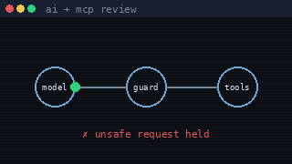
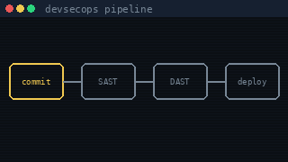
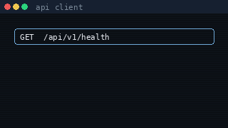
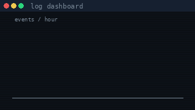
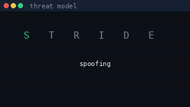
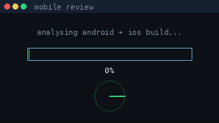

active operations

AI & MCP security
Assessed 10+ AI-enabled applications and MCP server integrations for prompt injection, tool misuse, and data exposure risks.

Secure architecture & Azure audits
Daily secure architecture design and review with product teams across application and Azure cloud architecture; audited Azure configurations and access controls, remediating 30+ misconfigurations.

DevSecOps pipelines
Designed and built complete pipelines in GitHub and Azure DevOps: SAST (Snyk, Veracode, GitHub Advanced Security), SCA (Black Duck), secrets (TruffleHog, GitHub Secret Scanning), containers (Trivy), and DAST (OWASP ZAP), reducing manual security gates.

AI security chatbot
An AI chatbot for Azure DevOps DevSecOps pipelines that lets developers retrieve their security scan reports through chat, integrated with SharePoint using the OAuth 2.0 On-Behalf-Of flow in Microsoft Entra ID.
AI evidence agent & access analysis
An AI agent that verifies cloud configuration evidence against Azure Security Benchmark controls, and an access control analysis tool that reviews access across Azure cloud resources.

Wiz integration
Integrated Wiz with Azure enterprise application resources for cloud security posture visibility.
Security Kanban board
Built a Kanban board in Azure DevOps, integrated with an on-premises accreditation application, now used by the entire World Bank security team for ticket assignment.

Risk acceptance
A risk-matrix-based risk acceptance path so teams can proceed with documented, approved risk, positioning security as a business enabler rather than a blocker.

Web, mobile & API testing
Tested 50+ web, mobile (Android and iOS), and API applications against the OWASP Top 10, scoring findings with CVSS; identified 50+ vulnerabilities, 30% remediated before release.
Leading the practice
Own retesting and remediation sign-off, present security risk to stakeholders and management, mentor junior analysts, and run secure-coding sessions for developers, maintaining testing methodology and playbooks.